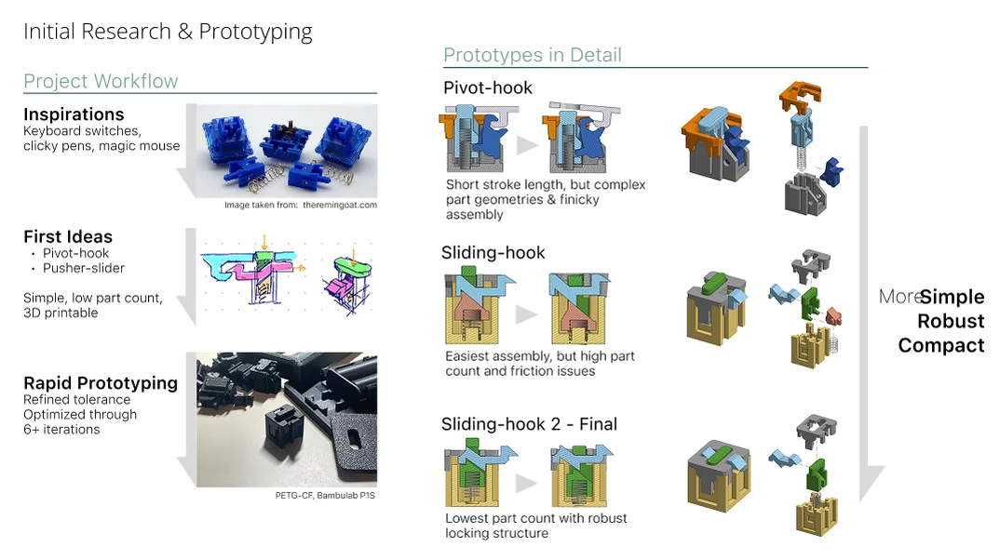
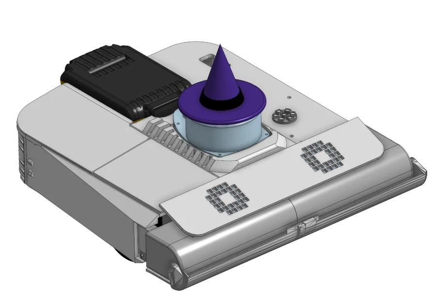

projects
Engineering

Apple Internship drone imageCMU CERLAB UW Sun Lab
manta-ray imageSoft Robotics
UW Sun Lab
manta-ray imageSoft Robotics
 Senior Capstone
Senior Capstone

Phil-Up
Apple Internship drone imageCMU CERLABUW Sun Lab
manta-ray imageSoft Robotics
Senior Capstone

Phil-Up